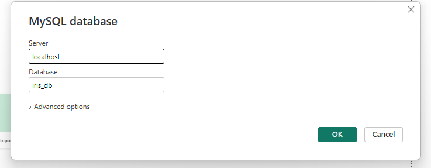
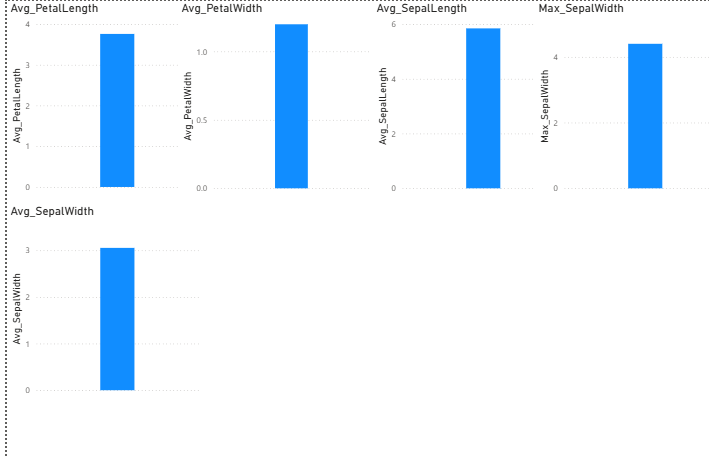

DATA UNDERSTANDING#
1. Pengertian Data Understanding#
Data Understanding merupakan proses dimana kita mempertemukan antara data apa yang kita miliki dan data apa yang kita seharusnya perlukan. Bisa jadi suatu project data analisis berawal dari penemuan data-data yang telah ada yang kemudian mengarahkan analist untuk menggali knowledge yang ada pada kumpulan data tersebut. Jenis data akan sangat menentukan jenis algoritma dan tujuan dari data mining yang ingin dicapai. Pada tahap pemahamnan data ini kita juga perlu memahami jenis data, sebagai berikut : a. Nominal, data yang berasal dari proses kategorisasi atau klasifikasi b. Ordinal, data yang berasal dari proses kategorisasi atau klasifikasi namun diantara data tersebut terdapat hubungan (misalnya hubungan bertingkat) c. Interval, Data interval adalah data yang diperoleh dengan cara pengukuran namun tidak ada titik nol yang absolut d. Rasio, data yang diperoleh dengan cara pengukuran, dimana jarak dua titik pada skala sudah diketahui, dan mempunyai titik nol yang absolut
2. Pengolahan Data#
pengolahan data ini menggunakan aplikasi Power BI yang dapat mempermudah pemrosesan data nya, untuk langkah-langkah nya sebagai berikut :
a. Menyiapkan Dataset Dataset yang digunakan adalah data iris dari Iris Flower yang ada di kaggle, dengan 5 kolom
b. Menyimpan data Dataset yang sudah berbentuk .csv ini kemudian disimpan di database MySQL Workbench dengan nama iris_db. Setelah masuk ke Workbench bisa langsung membuat database nya kemudian import file dataset nya
c. Menarik data ke Power BI Untuk dapat mengimport dataset ke power bi, maka klik get data dan pilih database yang digunakan. di sini saya memilih MySQL database. selanjutnya, isi nama server dan database yang digunakan untuk menyimpan dataset. Kemudian koneksikan power bi dengan dataset

d. Mengecek keseuaian data untuk mengecek kesesuain data maka klik Data view dak cek keseluruhan tipe data pada kolom nya.
e. Membuat ringkasan data Setelah data berhasil dimuat ke dalam Power BI, langkah berikutnya adalah masuk ke Report View dengan mengklik ikon grafik di sisi kiri. Pada tahap ini, kita mulai membuat visualisasi ringkas berupa Card Visual untuk mendeskripsikan nilai-nilai penting dari setiap kolom data. Pertama, tambahkan sebuah Card Visual ke kanvas, lalu tarik kolom SepalLength ke dalam card tersebut. Ubah metode agregasi datanya menjadi Minimum untuk menampilkan nilai terkecil dari kolom tersebut. Selanjutnya, duplikat card yang sama, kemudian ubah metode agregasinya menjadi Maximum, sehingga menampilkan nilai terbesar. Lakukan juga langkah-langkah tadi pada kolom lainnya, yaitu SepalWidth, PetalLength, dan PetalWidth, sehingga setiap kolom memiliki card yang menampilkan nilai minimum dan maksimum. Setelah itu, buat kembali card baru untuk masing-masing kolom, kali ini dengan metode agregasi Average. Dengan begitu, setiap kolom akan memiliki ringkasan berupa nilai rata-rata.
f. Hasil grafik dari langkah-langkah di atas hasilnya dapat dilihat pada gambar di bawah ini:

Selain menggunakan power bi, kita juga bisa menggunakan script python untuk menampilkan nilai minimum, maksimum,dan rata-rata. Berikut ini saya akan menuliskan script python nya:
import pandas as pd
import matplotlib.pyplot as plt
df = pd.read_csv('IRIS.csv')
stat_summary = pd.DataFrame({
'Min': df.min(numeric_only=True),
'Max': df.max(numeric_only=True),
'Mean': df.mean(numeric_only=True)
})
print(stat_summary)
plt.figure(figsize=(10,6))
numeric_cols = df.select_dtypes(include=['float64','int64'])
numeric_cols.mean().plot(kind='bar', color='skyblue', edgecolor='black')
plt.title('Rata-Rata Nilai per Kolom')
plt.xlabel('Kolom')
plt.ylabel('Nilai Rata-Rata')
plt.xticks(rotation=45)
plt.grid(axis='y', linestyle='--', alpha=0.7)
plt.tight_layout()
plt.show()
---------------------------------------------------------------------------
ModuleNotFoundError Traceback (most recent call last)
Cell In[1], line 1
----> 1 import pandas as pd
2 import matplotlib.pyplot as plt
4 df = pd.read_csv('IRIS.csv')
ModuleNotFoundError: No module named 'pandas'
Berikut ini script untuk enampilkan data yang sudah dikelompokkan ke dalam 3 spesies yang ada:
import pandas as pd
import matplotlib.pyplot as plt
df = pd.read_csv('IRIS.csv')
grouped_mean = df.groupby('species').mean(numeric_only=True)
print(grouped_mean)
grouped_mean.plot(kind='bar', figsize=(10,6))
plt.title('Rata-Rata Setiap Kolom Berdasarkan Spesies')
plt.xlabel('Spesies')
plt.ylabel('Rata-Rata Nilai')
plt.xticks(rotation=0)
plt.grid(axis='y', linestyle='--', alpha=0.7)
plt.tight_layout()
plt.show()
sepal_length sepal_width petal_length petal_width
species
Iris-setosa 5.006 3.418 1.464 0.244
Iris-versicolor 5.936 2.770 4.260 1.326
Iris-virginica 6.588 2.974 5.552 2.026